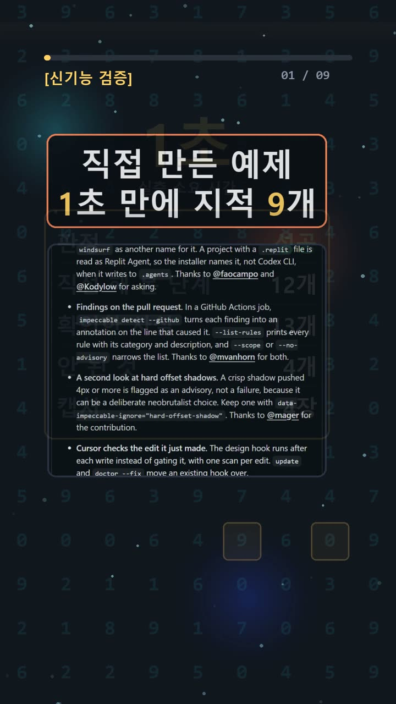
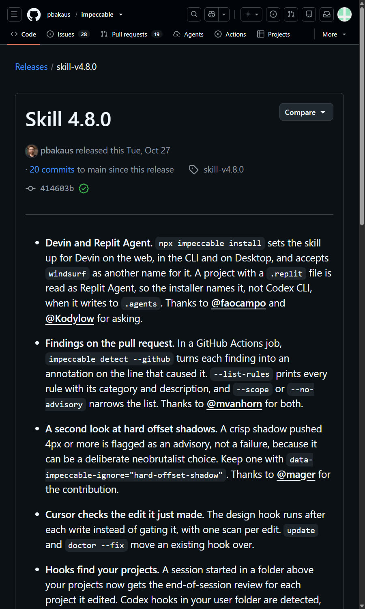
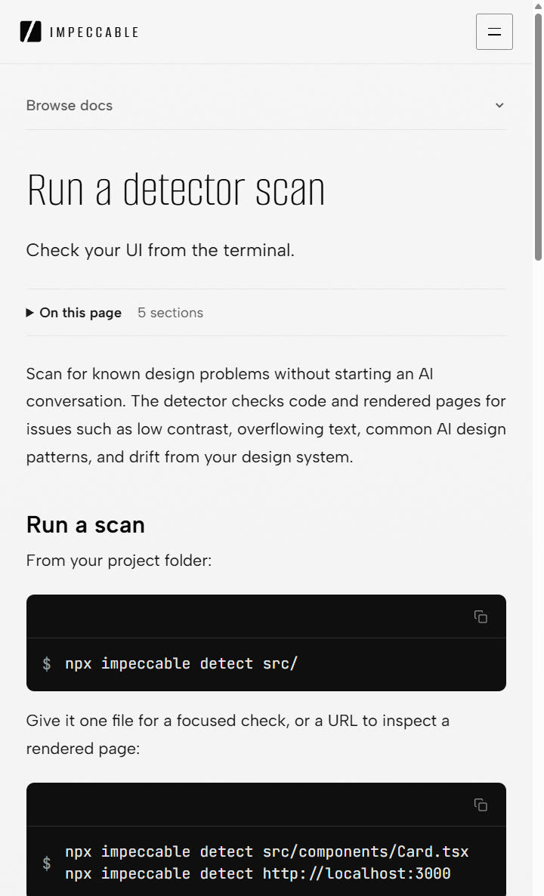
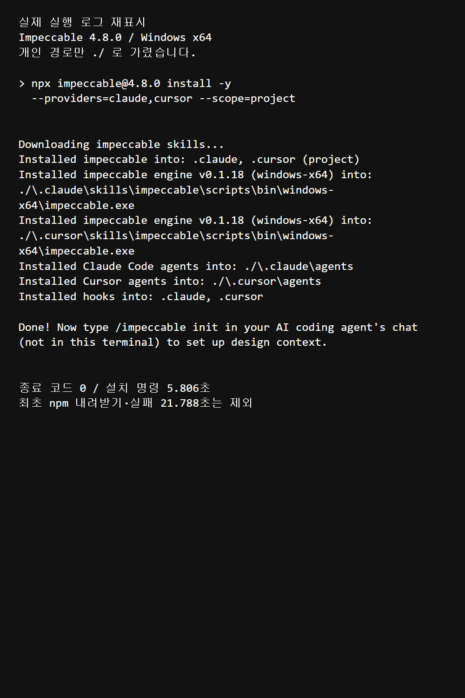

이 포스팅은 쿠팡 파트너스 및 토스쇼핑 쉐어링크 활동의 일환으로, 이에 따른 일정액의 수수료를 제공받습니다.
AI UI 흔한 패턴 점검 — Impeccable 4.8.0 검사기 직접 설치기

검증 범위 · 직접 확인 기록 · 이 글은 2026-10-30에 공식 출처를 열어 보고 우리 PC에서 직접 확인한 기록(확인 수준: verified)을 바탕으로 AI 도구와 함께 정리했습니다.
명령어·설정·실패 해결표 바로 보기 (무료 공개)명령어·설정·실패 해결표
| 구분 | 내용 | 해결 |
|---|---|---|
| 명령어 | node --version | |
| 명령어 | npx --yes impeccable@4.8.0 install -y --providers=claude,cursor --scope=project | |
| 명령어 | npx impeccable install | |
| 명령어 | /impeccable |
한눈에 보기
- 무엇인가요? Claude Code·Cursor·Codex CLI 같은 코딩 에이전트(코드를 대신 써 주는 AI 도구)에 디자인 명령(polish·bolder·critique·audit)을 더하는 스킬이에요. 규칙 62개로 UI의 흔한 패턴을 잡는 검사기도 함께 들어 있어요.
- 결론: Windows x64에서 프로젝트 범위 설치와 예제 1회 검사까지 성공했어요(확인 수준 verified, 단 설치 수준까지만). 예제에서 지적 9개(주요 8, 참고 1)와 고유 규칙 5종이 나왔어요.
- 한계: polish로 화면을 고치는 단계는 해 보지 않았어요. 그래서 "디자인이 좋아진다"는 말은 하지 않을게요.
같은 내용을 짧게 본 영상: 유튜브 쇼츠
시작 전에 확인할 것
- 요금: 스킬과 검사기는 무료 오픈소스예요. 라이선스는 Apache-2.0이고, 만든 사람은 Paul Bakaus예요. 다만 polish 같은 수정은 쓰는 코딩 에이전트의 계정과 사용량이 들어요.
- 계정: 설치와 파일 검사만 할 때는 가입, 결제, API 키(서비스 이용 열쇠), AI 계정이 모두 필요 없었어요.
- Node.js: 최소 18.19.0 이상이 있어야 해요. Node.js는 자바스크립트 실행기이고, npx 명령을 쓰는 데 필요해요. 4.8.0 태그의 공식 package.json에
>=18.19.0이라고 적혀 있어요. 다만 Node.js 18은 이미 지원이 끝난 버전(EOL)이에요. 새로 설치한다면 nodejs.org에서 LTS(장기 지원) 버전을 받으세요. 그다음 PowerShell을 새로 열어node --version으로 버전을 확인해요. 우리는 이미 깔려 있던 v26.5.0을 그대로 썼어요. - OS: 우리가 직접 돌려 본 곳은 Windows x64뿐이에요. 공식 목록에는 macOS·Linux용 엔진도 있지만, 그쪽은 실행해 보지 않았어요.
- 인터넷: 처음 패키지·스킬·엔진을 내려받을 때 필요해요.
- 버전: 이번 글은 skill-v4.8.0 기준이에요. 처음 나온 버전이 아니라 업데이트예요. 공개 시각은 2026-10-26 23:41(UTC)이고, 한국 시각으로는 10/27 오전 8:41이에요(릴리스 노트).
설치 방법
1. 프로젝트 폴더 준비 ✅ 직접 해 봄 ① 연습용 웹 프로젝트 폴더를 하나 만들어요. PowerShell(Windows 명령 입력 창)에서 mkdir impeccable-test로 폴더를 만들고, cd impeccable-test로 그 폴더로 이동해요. 폴더 이름은 예시예요. ② 공식 문서는 "프로젝트 루트에서 시작하라"고만 안내해요. 따로 정해진 성공 문구는 없어요.
2. 설치 명령 실행 ✅ 직접 해 봄 ① 버전을 고정해서 프로젝트 범위로만 설치해요. -g나 --global(전역 설치)은 붙이지 않아요.
npx --yes impeccable@4.8.0 install -y --providers=claude,cursor --scope=project
② 우리는 5.806초 만에 종료 코드 0(정상 종료)이 나왔어요. npm 패키지 4.8.0과 엔진 0.1.18이 설치됐고, 프로젝트 안 .claude·.cursor 폴더에 스킬·에이전트·hook 파일이 생겼어요. ③ 처음 실행에서 막히면 아래 '자주 막히는 곳'을 보세요. 우리도 첫 시도에서 실패했어요.
3. 대화형 설치(선택) 📄 공식 문서 기준 ① 버전 고정 없이 npx impeccable install만 입력하면 질문이 이어지는 방식으로 설치돼요. ② 감지된 코딩 도구 목록이 나와요. 그다음 쓸 도구와 범위(이 프로젝트만인지, 전체인지)를 고르게 돼요. 지원 도구에서는 자동 디자인 검사 hook도 제안하는데, 기본값은 yes예요. 버튼 글자는 문서에 없어요.
4. hook 확인 후 도구 다시 불러오기 ✅ 직접 해 봄(파일 확인까지) ① 생긴 파일 .claude/settings.local.json과 .cursor/hooks.json을 열어 내용을 읽어 봐요. hook은 정해진 순간에 자동으로 도는 명령이에요. ② 확인이 끝나면 코딩 도구를 다시 불러와요. 이 설치가 Claude Code·Cursor 자체를 깔아 주지는 않아요. 파일 검사만 할 때는 없어도 되지만, polish 같은 수정을 쓰려면 도구를 따로 준비해야 해요. 프로젝트 범위로 깔았으니 설치한 그 프로젝트를 열어요. 새 스킬이 안 보이면 도구를 재시작하고, 채팅에 /impeccable을 입력해 명령 목록이 나오는지 확인해요. 이 부분은 공식 안내를 따른 것이고, 우리는 도구 실행까지는 하지 않았어요.
5. Claude Code 플러그인으로 설치(대안) 📄 공식 문서 기준 ① Claude Code에서 /plugin marketplace add pbakaus/impeccable을 입력해요. 이어서 /plugin에서 Impeccable을 설치해요. 플러그인은 기능을 더해 주는 추가 부품이에요. ② 문서로만 확인했어요. 직접 실행하지는 않았어요.

사용 방법
1. 파일 검사 ✅ 직접 해 봄 ① 프로젝트 폴더에서 mkdir src로 폴더를 만들고, 검사할 HTML·CSS·JSX·TSX 파일을 src/에 넣은 뒤 실행해요. 우리는 직접 쓴 작은 가상 회사 HTML/CSS를 넣었어요. 다른 파일을 검사하면 지적 수와 규칙 종류가 달라질 수 있어요.
npx --yes impeccable@4.8.0 detect --json src/
② 종료 코드의 뜻은 이래요. 0은 주요 지적 없음, 2는 주요 지적 발견, 1은 검사 실패예요. 우리는 2가 나왔어요. 지적이 있다는 뜻이니 정상 결과예요. ③ 결과에 같은 지적이 여러 번 나올 수 있어요. 항목 수를 문제 수로 바로 세지 마세요.
2. 규칙 목록 보기 ✅ 직접 해 봄
npx --yes impeccable@4.8.0 detect --list-rules --json
② 고유 규칙 ID 62개가 나와요. 우리 결과도 62개였어요.
3. 렌더링 검사(URL) 📄 공식 문서 기준 ① 대비, 작은 글자처럼 실제 화면을 봐야 하는 규칙은 개발 서버 URL을 detect에 넘겨야 검사돼요. 이때 Chrome·Chromium·Edge가 깔려 있어야 하고, 필요하면 IMPECCABLE_BROWSER로 브라우저를 지정해요(검사기 문서). ② 파일 검사만으로는 이 규칙들까지 끝난 게 아니에요. 우리는 URL 검사를 해 보지 않았어요.
4. 에이전트에게 다듬기 시키기 📄 공식 문서 기준 ① 채팅에서 /impeccable init을 입력하고, 이어서 /impeccable polish 대상을 입력해요. Codex에서는 $impeccable 문법을 써요. ② 이 단계는 계정 사용량이 들어요. 이번에는 실행하지 않았어요.
우리가 직접 해 본 결과
확인 수준은 verified예요. 다만 이 판정은 격리 폴더 설치, 도움말, 버전 확인, 예제 1회 검사까지만 적용돼요. 2026-10-30 기준이에요.
시간순으로 적으면 이래요.
1. 첫 도움말 실행은 실패했어요. 21.788초 동안 패키지는 내려받았어요. 그런데 The system cannot find the path specified.가 뜨고 종료 코드 3으로 끝났어요. 예상과 달랐던 부분이에요. 2. 경로를 보정하니 해결됐어요. 그 실행 창에만 Node 경로와 캐시 경로를 지정하고 다시 돌렸어요. 2.113초 만에 성공했어요. 시스템 PATH는 바꾸지 않았어요. 첫 실행 때는 Node를 PATH에 넣지 않고 전체 경로로 불렀어요. 같은 오류가 나면 아래처럼 해 보세요. 꺾쇠 안은 본인 폴더로 바꾸고, 세 줄 모두 같은 PowerShell 창에서 실행해요. 창을 닫으면 설정은 사라져요.
$env:PATH = "<Node.js 폴더>;" + $env:PATH $env:npm_config_cache = "<캐시 폴더>" npx --yes impeccable@4.8.0 --help
우리 재시도는 첫 실행이 받아 둔 캐시를 다시 쓰려고 --offline도 붙였어요. 격리 실험이라 HOME·TEMP 같은 경로도 함께 바꿨어요. 그래서 이 중 어느 설정이 결정적이었는지는 나눠서 확인하지 못했어요.
3. 프로젝트 범위로 설치했어요. 5.806초가 걸렸어요. 첫 실패 시간은 여기에 넣지 않았어요. 4. 예제를 검사했어요. 제가 직접 쓴 작은 가상 회사 HTML/CSS예요. Claude Code가 만든 화면은 아니에요. 검사에 0.961초가 걸렸어요. 설치를 마친 상태에서 작은 파일을 검사한 시간만이에요.
- 결과: 9항목(주요 8, 참고 1)
- 고유 규칙 5종:
side-tab,gradient-text,overused-font,skipped-heading,bounce-easing


이번 결과의 한계도 적어 둘게요. 예제 1개를 1회 검사했을 뿐이에요. polish, 전후 비교, URL 검사, AI가 만든 화면인지 가려내는 성능은 모두 확인하지 않았어요. 공식 문서도 "깨끗한 검사 결과가 디자인 품질을 보증하지는 않는다"고 말해요.
비슷한 도구를 써 볼 때 확인할 것
- 설치 범위가 프로젝트인지, 전역인지
- 생기는 hook 파일과 그 내용
- 종료 코드가 '지적 발견'인지, '검사 실패'인지
- 렌더링 규칙까지 검사한 건지, 파일 검사만 한 건지
자주 막히는 곳
The system cannot find the path specified.(종료 코드 3) — 우리는 여기서 막혔어요. 패키지가 내려받아졌는지 로그로 확인했어요. 그다음 그 실행 창에서만 Node 경로를 다시 잡아 주니 성공했어요.npx.ps1을 로드할 수 없다는 보안 오류가 나와요 — 우리가 겪은 오류는 아니에요. PowerShell 실행 정책이 스크립트 파일(.ps1)을 막으면 날 수 있어요(Microsoft 문서). 실행 정책을 낮추기 전에 같은 명령의npx만npx.cmd로 바꿔 보세요. 이 방법은 직접 실행해 보지는 않았어요.- 종료 코드 2가 나와요 — 오류가 아니에요. 주요 지적이 있다는 뜻이에요. 1이 나와야 검사 실패예요.
- 대비·글자 크기 지적이 안 나와요 — 파일 검사에서는 안 나올 수 있어요. 개발 서버 URL과 지원 브라우저로 렌더링 검사를 해야 해요.
- hook이 걱정돼요 — 공식 문서에 경고가 있어요. hook은 모델 승인과 별개로 실행될 수 있고, 엔진을 내려받을 수도 있어요. 낯선 저장소에는 무심코 적용하지 마세요.
- 터미널 캡처가 안 돼요 — 우리도 원본 터미널 캡처에는 실패했어요. 그래서 위 로그 이미지는 저장된 실행 로그를 다시 표시한 화면이에요.
🧰 오늘의 실험실 생존 세트 — 밤새 실험 돌릴 때 쟁여 두는 것들


정리
Impeccable 4.8.0은 Windows x64에서 프로젝트 범위로 깔끔하게 설치됐어요. 파일 검사는 계정 없이 1초 안쪽으로 끝났어요. 다만 "흔한 패턴을 짚어 주는 검사기"까지만 확인했어요. 디자인을 실제로 좋게 만드는지는 polish를 돌려 봐야 알 수 있어요. 원문과 전체 안내는 공식 GitHub 저장소에서 볼 수 있어요.
이 글은 실제 설치·검사 기록을 바탕으로 AI 도구와 함께 정리했어요.
혹시 글에서 틀린 부분이나 고쳐야 할 부분이 보이면 유튜브·스레드 댓글로 알려 주시면 정말 감사하겠습니다. 바로 확인해서 고칠게요!
🛒 다시 보기: 오늘의 생존 세트
🎙️ AI 음성이 궁금하다면
우리 채널 내레이션은 타입캐스트를 쓰지만, 영어·다국어 AI 음성을 실험해 보고 싶다면 ElevenLabs도 많이 쓰여요.
[광고·제휴] ElevenLabs 둘러보기🎬 쇼츠로 다시 보기 · 🧵 함께 이야기하기
🧵 스레드 @alligatorxor에서 오늘 실험 이야기 나누기 · ▶ 유튜브 새AI실험노트 다른 쇼츠 보기 · 📒 실험노트 홈